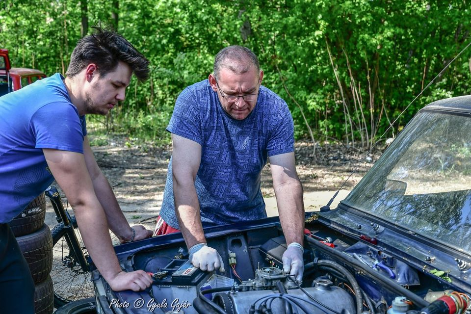
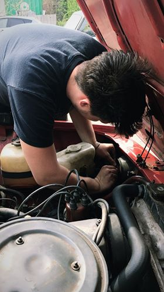
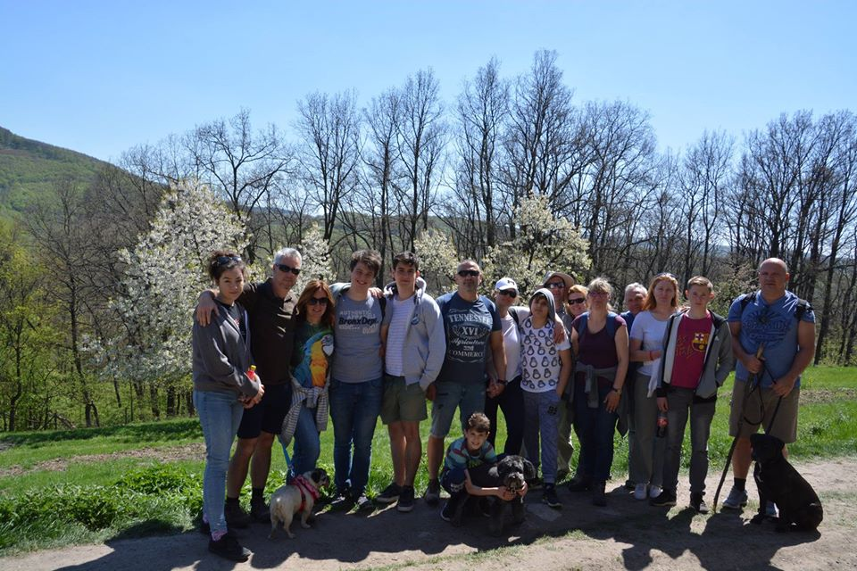

|
Ahogy a képeken is látszik a fő hobbijaim az autók, azon belül is a régebbiek. Szerelem is őket, innen is jött, hogy miért szeretnék mérnök lenni. Ha kíváncsi vagy az eddigi autóimra kattints ide. |
 |
Ezen kívül sokat kirándulok szabadidőmben a családdal és a barátaimmal. Főleg a természetben szeretek sétálni, az mindig megnyugtat. |
|  |
Ha még kérdésed van, akkor itt találsz elérhetőséget. |
 |